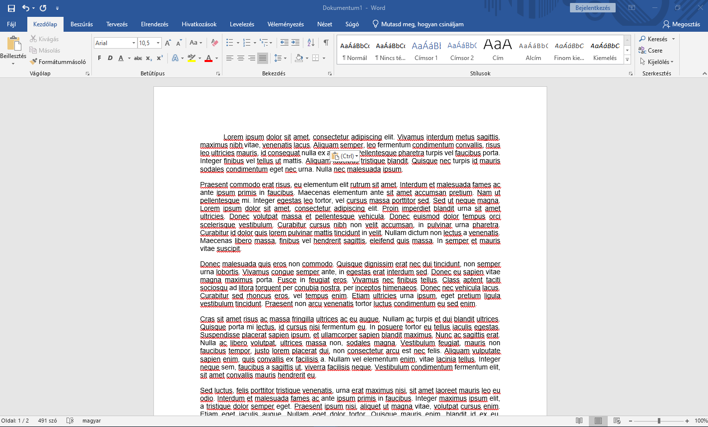
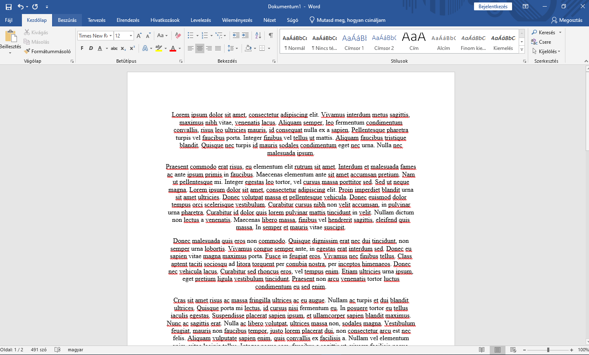
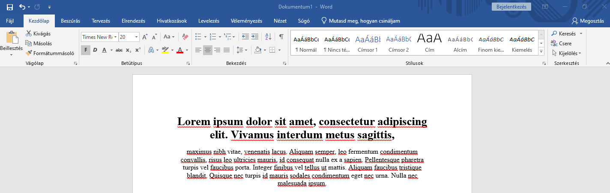
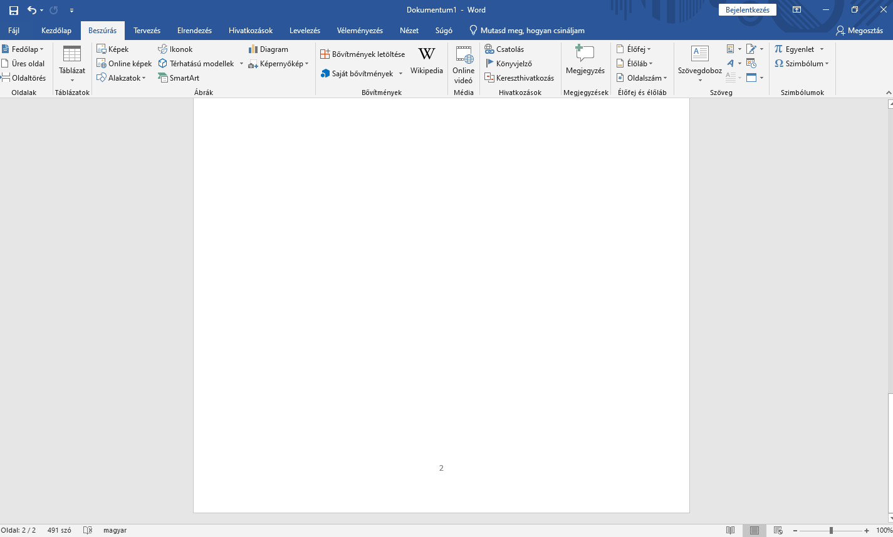
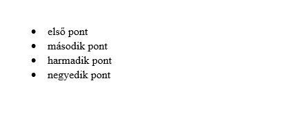
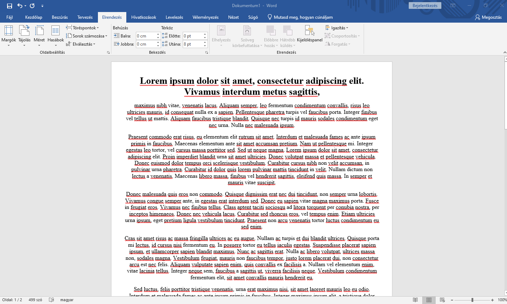

Első feladatként mindenképp azt ajánlanám, hogy ismerkedjünk meg az alapvető funkciókkal mielőtt egy komplex feladathoz kezdenénk hozzá.
Keressünk egy tetszőleges szöveget az interneten, vagy be is gépelhetjük amit szeretnénk.

Beillesztés után nekem így néz ki a példaszövegem.
Állítsuk át a betűtípust, betűméretet, a sorközt.
Ehhez ki kell jelölnünk a szöveget és a Kezdőlap -> Betűtípus Részénél át kell állítanunk a betűtípust betűméretet és az igazítások közül válasszunk egy tetszőlegest.
Ezt a folyamatot többféleképpen is megtehetjük, egy pár példa:
Közvetlenül a betűtípus menürésznél
A betűtípus jobb alsó sarkában a kis nyílra kattintva a felnyíló ablakon
A kijelölt szövegen jobb egérgombbal kattintva a betűtípus elemre kattintva

A végeredmény nálam így néz ki. (Times New Roman betűtípus 12 es betűméret középre igazított szöveg)
Emeljünk ki egy címet más mérettel és tegyük félkövérré.
Ehhez a szövegem első sorának végén ütöttem egy ENTER billentyűt majd kijelöltem az első sort nagyobbra vettem a betűméretet és félkövérré tettem a betűtípus fül funkcióival.

Most már így fest az eleje.
Adjunk hozzá oldalszámot.
Oldalszám hozzáadását a beszúrás fül oldalszám részén tudjuk megtenni ahol én az oldal alján opciók közül választottam a kettes számút így az oldal alján középre került.

Készítsünk egy felsorolást.
Nekem a második oldal teljesen üres ezért oda készítek egy felsorolást.
Ehhez csak rákattintok a Kezdőlap->Bekezdés résznél a felsorolás ikonok egyikére, majd egyesével begépelem a felsorolandó szövegeket.

Így ezt kaptam a második oldalamon.
Állítsuk át az oldalméretet és a margókat.
Ehhez a Elrendezés->Oldalbeállítások alatt tehetjük meg.
Szerintem a legegyszerűbb a kis nyíllal a jobb alsó sarkában de többféleképpen is lehet.

Beállítottam az A4 es formátumot és kisebbre vettem a margókat így láthatóan széthúzottabb lett a szövegem.
Gyakorláshoz tudásunk felelevenítéséhez az ilyen egyszerűbb feladatok mindig jók és bármikor bármeddig lehet őket készíteni tejesen csak ismerkedés szinten.
Pl.: Szövegszín Méretek Cím Oldalszámok Térközök Behúzások Igazítások Betűtípusok
Fogjunk bármikor egy tetszőleges szöveget és formázzuk meg amíg elégedettek nem vagyunk vele.